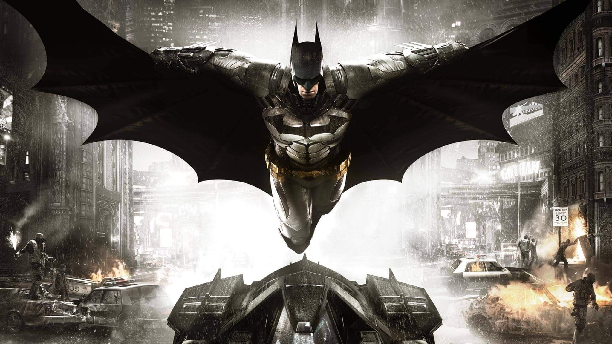

Batman, zengin sanayici ve hayırsever Bruce Wayne'in alter egosudur. Çocukluğunda ailesinin trajik bir soygun sırasında öldürülmesine tanık olan Bruce, hayatını suça karşı savaşmaya adamıştır. Fiziksel ve zihinsel sınırlarını zorlayarak, süper güçleri olmadan suçla mücadele eden nadir kahramanlardandır. Bu durum kendisinin süper kahramanlığının tartışılmasına da yol açar :)
🔥 Tartışma Konusu: Süper Güçsüz Süper Kahraman Mı?
Batman’ın 'Süper Kahraman' tanımına uygunluğu, çizgi roman çevrelerinin en hararetli tartışma konularından biridir. Geleneksel doğaüstü güçlere sahip olmaması nedeniyle bazı çevrelerce 'süper kahraman' yerine 'sadece eğitimli ve zengin bir kahraman' olarak nitelendirilir. Ancak Batman'ın asıl süper gücü, Gotham’ı koruma yolunda harcadığı sınırsız servet ve aşılmaz iradedir. Bu da onu, süper gücünü kendisi yaratan, insanüstü bir kahraman yapar.
Son Güncelleme:
Batman'in Dünyasından Detaylar
💥 Süper Güçler ve Yetenekler
Üst Düzey Zekâ (Dünyanın en iyi dedektiflerinden biri)
Dövüş Sanatları Ustalığı (Tüm stillerde usta)
Yüksek Teknoloji Ekipmanları (Batarang, Batmobil, Grappling Gun)
Korku Uyandırma ve Psikolojik Harp
Çok Zengin

Görsel 1: Batman'in ikonik yarasa logosu ve Gotham şehri silüeti.
🃏 Başlıca Düşmanları
Detayları görmek için isimlere tıklayın:
The Joker (Kaosun Palyaçosu)
Batman'ın akıl sağlığını zorlayan, kaotik ve cinayet dolu eylemleriyle bilinir.
Harley Quinn (Dr. Harleen Quinzel)
Eski psikiyatristtir. Joker'e olan çarpık aşkı yüzünden suç dünyasına katılmış, ancak son dönemde ondan bağımsız hareket eden popüler bir anti-kahramandır.
Penguen (Oswald Cobblepot)
Saygın bir iş adamı görünümü altında, yeraltı suç ağlarını yöneten, şemsiyeleri silah olarak kullanan suç lordu.
Riddler (Bilmececi - Edward Nygma)
Suçlarını işlemeden önce Batman'e her zaman bulmacalar ve bilmeceler bırakan, dâhi seviyesinde zekaya sahip düşman.
Catwoman (Kedi Kadın - Selina Kyle)
Ahlaki açıdan gri bölgede yer alan, usta bir hırsız ve Batman'in hem düşmanı hem de romantik ilgi odağıdır.
Two-Face (İki Yüz - Harvey Dent)
Eski Bölge Savcısıdır. Yüzünün yarısının asitle yakılması sonucu suça yönelmiş, tüm kararlarını bozuk parayla atan trajik bir figür.
Poison Ivy (Zehirli Sarmaşık - Pamela Isley)
Bitkileri ve doğayı koruma takıntısıyla hareket eden, bitki zehirlerini ve feromonları kontrol edebilen biyokimyacı.
🎮 Efsanevi Batman Oyun Serisi (Arkham Serisi)
Oyun Adı
Konu ve Atmosfer
Batman: Arkham Asylum
Arkham Akıl Hastanesi'nde Joker ve diğer suçlularla olan kapalı alan mücadelesi.
Batman: Arkham City
Gotham'ın bir bölümünün devasa bir açık hava hapishanesine dönüştürüldüğü geniş macera.
Batman: Arkham Origins
Batman'in kariyerinin henüz ikinci yılında, sekiz suikastçıya karşı verdiği başlangıç mücadelesi.
Batman: Arkham Knight
Korkuluk ve Arkham Knight'a karşı Batmobil ile verilen son büyük savaş.